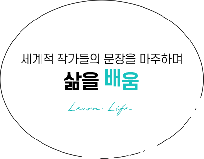
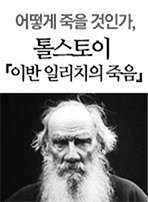

작가들은 글을 통해 세상과 소통하기도 하고, 꿈과 희망에 대한 이야기를 들려주기도 합니다.
때로는 힘있는 문장으로 강렬한 메시지를 던지기도 하지요.
그래서 작가들의 작품을 탐독하면 마음에 깊은 울림을 받기도 하지만,
어떤 때는 그 얇은 책장 한 장조차 넘기기 힘들기도 합니다.
톨스토이, 도스토옙스키, 헤밍웨이 등 세계적 문호의 문장에는 어떤 특별함이 있을까요? 유명함을 넘어 위대한 작가의 반열에 오른 이들의 문장들을 마주하며 인문학적으로 더 깊은 사색의 시간을 가져보고자 합니다.
Salon de SERICEO
세계적 작가들의 문장을 마주하며 삶을 배움

"인간은 파괴될지언정 패배하지는 않는다"
A man can be destroyed but not defeated.
1953년 퓰리처상, 1954년 노벨문학상을 수상한 미국의 대작가 어니스트 헤밍웨이
쿠바를 좋아하여 쿠바로 자주 놀러 갔던 헤밍웨이가 잘 알던 쿠바인 어부의 이야기를 토대로 새롭게 창작한 소설 <노인과 바다>. 늙은 어부 산티아고가 멕시코만 에서 청새치와 벌인 사투를 통해 결과보다 중요한 과정의 의미를 생각해보게 하는 작품입니다.
헤밍웨이의 문학 인생이 담긴 마지막 소설, <노인과 바다> 입니다.

"잠시 후 나는 밖으로 나가 병원을 떠나 비를 맞으며 호텔로 돌아왔다."
After a while I went out end left the hospital and walked back to the hotel in the rain.
헤밍웨이 자신이 겪었던 첫사랑의 추억을 소설 형식으로 풀어낸 작품, <무기여 잘 있거라>
많은 평론가들은 삶과 죽음이 엇갈리는 전쟁을 배경으로 펼쳐지는 이 소설을 진한 러브스토리로 극찬합니다. 이 소설의 마지막 문장은 극적 효과를 살리기 위해 수십 번 고쳐 쓴 후 비로소 완성했다고 합니다. 놀라울 만큼 간결하고 감정이 없습니다.

각각의 물방울들은 흘러 넘쳐 더 많은 공간을 차지하려고 하지만, 또 다른 물방울들이 똑같이 움직이며 그것을 압박하여, 때로는 흐트러지기도 하고 때로는 합쳐지기도 했다.
"이것이 삶이다" 하고 노교수가 말했다.
작가 중의 작가, 톨스토이가 남긴 명작 중의 명작 <전쟁과 평화>입니다. 러시아 역사의 변곡점에서 다양한 인간 군상의 삶과 죽음, 철학적 성찰을 그린 작품입니다.
톨스토이의 <전쟁과 평화>와 함께 나에게 주어진 삶의 길을 바라보는 시간을 가져보면 어떨까요?

항상 똑같았던 삶 계속되면 될수록 생명이라곤 찾아볼 수 없는 삶 산에 오른다고 생각했었지
…
그런데 사실은 정확히 그만큼
발 아래에서 삶은
멀어져 가고 있었던거야
그래 다 끝났어
삶과 죽음을 고민한 작가, 톨스토이는 <이반 일리치의 죽음>에서 유복하고 순탄한 삶을 살아온 판사 이반이 우연히 불치병에 걸려 사망하는 이야기로 임종 직전 삶과 죽음의 의미를 깨달으며 죽음을 극복하는 모습을 보여줍니다.
어떻게 죽어야 할까요? 어떤 삶을 살아야 할까요?

"죽 한 그릇만 더 주세요… "
Please Sir. I want some more.
다음으로, 셰익스피어와 함께 영국을 대표하는 최고의 작가로 평가받는 찰스 디킨스의 작품을 만나보겠습니다.
찰스 디킨스의 <올리버 트위스트>는 고아소년 올리버를 중심으로 런던 빈민가의 비참한 삶을 비판 하는 내용으로, 올리버는 열악한 환경에도 불구하고 선함과 기품을 잃지 않는 전형적인 신사의 모습을 보여줍니다. 영국사회에서는 품위 있는 신사계층이 존중 받는 선망의 대상이었습니다. 올리버가 영국 신사의 모습을 보여주고 있어서 였을까요?
남녀노소 할 것 없이, 지위고하를 막론하고 모든 영국인이 <올리버 트위스트>를 좋아했다고 합니다.

마음에서 진정한 신사가 되지 못한 사람은 태도에서 진정한 신사가 될 수 없다.
여러분은 세상을 떠나는 순간, 어떤 유산을 남기고 싶으신가요?
찰스 디킨스의 소설 <위대한 유산>은 주인공 핍의 성장 과정을 그린 작품으로, 자신에게 상속된 ‘위대한 유산’은 인간적 성숙이라는 정신적으로 ‘위대한‘ 유산임을 깨닫게 되는 내용입니다. <위대한 유산>을 통해 진정한 의미의 신사는 어떤 모습일지 생각해 보면 좋겠습니다.